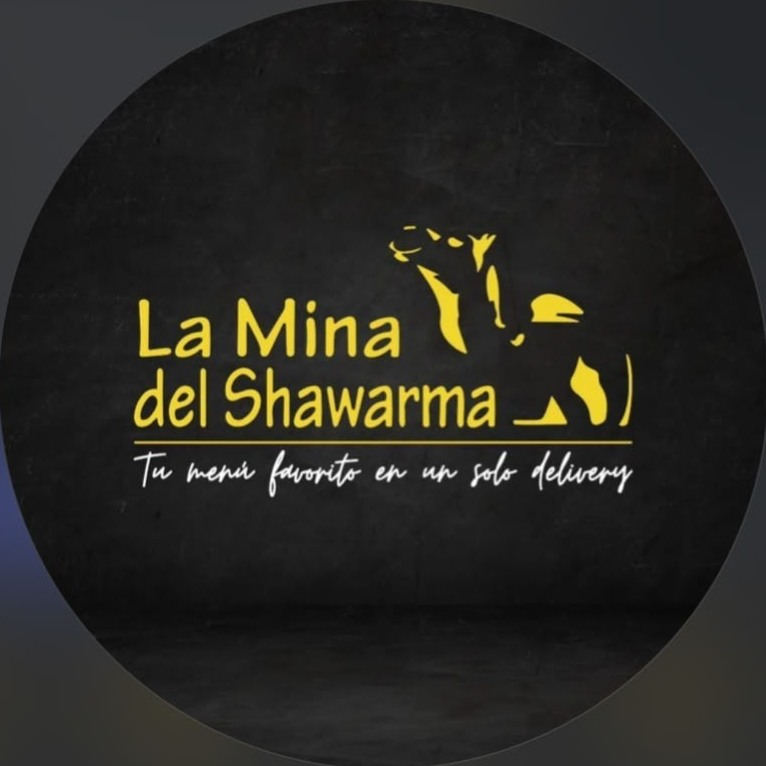

AlejandroDesarrollador web freelance
Diseño y construyo landing pages, sitios corporativos y tiendas online que se ven cuidados y funcionan rápido.

Desarrollo web con criterio de diseño
Tengo 24 años y trabajo como freelancer en desarrollo web, combinando estética, funcionalidad y movimiento. Me gusta construir interfaces limpias, minimalistas y con detalles visuales que marcan diferencia.
Además soy estudiante independiente de desarrollo web, siempre aprendiendo nuevas tecnologías y técnicas de animación, y estudiante de enfermería, lo que me da una perspectiva humana y empática en todo lo que hago.
Cada proyecto tiene personalidad propia: fondos animados, microinteracciones, transiciones suaves y una narrativa visual que acompaña a la marca.
- Edad24 años
- RolFreelancer en desarrollo web
- ServiciosLanding pages, sitios corporativos y tiendas online
- FormaciónDesarrollo web y enfermería
- IdiomasEspañol, aprendiendo japonés
Naxa DigitalMi startup de páginas web y community manager
Creo sitios web modernos, rápidos y a medida, y gestiono la presencia de tu marca en redes. Precios de referencia 2026.
Páginas web
Landing Page
- Una sola página (one-page)
- Diseño responsive
- Formulario de contacto
- Optimización SEO básica
- Entrega en 3-5 días hábiles
Sitio Corporativo
- Hasta 6 secciones o páginas
- Diseño a medida, sin plantillas
- Panel de contacto con mapa
- SEO on-page completo
- Integración con redes sociales
- Entrega en 7-10 días hábiles
Tienda Online
- Catálogo de productos
- Carrito y pasarela de pago
- Panel de administración
- SEO y analítica integrada
- Hasta 50 productos incluidos
- Entrega en 15-20 días hábiles
Community manager
Instagram Community Manager
- Creación de contenido
- Atención al cliente, con o sin publicidad activa
- Publicación diaria durante todo el mes, con la frecuencia que elijas
Paquete de creación de contenido visual
- 30 diseños personalizados para tu marca
- Sugerido: 15 publicaciones y 15 historias
- Alineado a tu identidad visual: colores, tipografía y estilo
- Formatos 1:1 o 4:5 para posts y 9:16 para historias
- Material listo para publicar
Servicios adicionales
- Página adicional
- $80 / página
- Diseño UI personalizado (Figma)
- $250
- Copywriting y redacción
- $150
- Optimización SEO avanzada
- $300
- Producto adicional en tienda (bloque de 50)
- $120
- Multi-idioma (por idioma)
- $180
- Migración de sitio existente
- Desde $200
Mantenimiento mensual
- Básico: seguridad y respaldos
- $35 / mes
- Estándar: Básico + 2 h de cambios
- $70 / mes
- Premium: Estándar + soporte prioritario y reportes
- $120 / mes
Precios de referencia, sujetos a variación según el alcance del proyecto. No incluyen dominio, hosting ni licencias de terceros salvo que se indique. Se solicita un anticipo del 50% para iniciar. Métodos de pago: Binance Pay / USDT, PayPal y bolívares a la tasa BCV del día.
Pedir presupuestoProyectos
Trabajos que representan mi forma de construir: diseño cuidado, animación con intención y foco en la experiencia de quien los usa.

La Mina del Shawarma
RestauranteDiseño premium con animaciones GSAP, menú interactivo con carrito de pedidos y filtros por categoría.
La Mina del Shawarma 2.0
RestauranteLa segunda versión del sitio: mejor rendimiento, nueva interfaz y pedidos online más directos.

El Griego
RestauranteComida griega con una interfaz intuitiva que pone los platillos mediterráneos por delante.

Aura
PortfolioPortafolio con diseño inmersivo, animaciones fluidas y una narrativa visual que transmite identidad.

Oasis 2
NeónEstética neón vibrante sobre fondo oscuro, con acentos luminosos y atmósfera digital envolvente.

Nova Web
PrácticaEjercicio enfocado en estructura HTML y CSS, buscando un diseño limpio, responsivo y bien alineado.
Habilidades
Lo que uso para construir experiencias web modernas, fluidas y bien terminadas.
Lenguajes
- HTML5
- CSS3
- JavaScript ES6+
- JSON
Frontend y estilos
- Flexbox y CSS Grid
- Variables CSS
- Diseño responsivo
- Modo claro y oscuro
- Tipografía web
- Canvas API 2D
Animación
- GSAP 3
- ScrollTrigger
- Animaciones CSS3
- Microinteracciones
- Partículas en Canvas
- Transiciones de página
Herramientas
- Git y GitHub
- VS Code
- Chrome DevTools
- Vercel
- Netlify
- CodePen
- Emailnaxayeray@gmail.com
- WhatsApp+58 412 970 9258
-
UbicaciónVenezuela, trabajo remoto
-
DisponibilidadAbierto a proyectos freelance